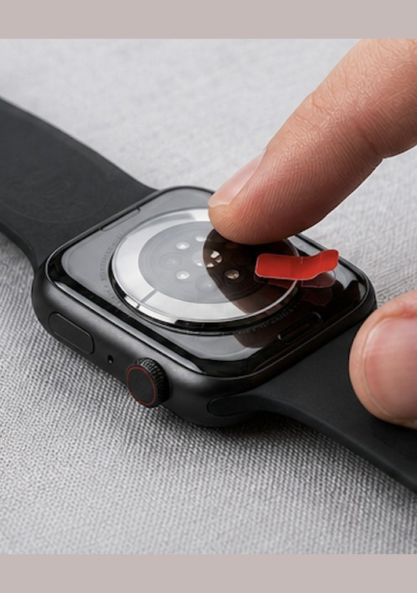

Sensor Tattoo Fix Leitfaden
Apple Watch fragt bei Tattoo ständig nach dem Passcode?
Auf der Apple Watch kann Tinte unter dem Sensor zu wiederholten Passcode-Aufforderungen, schwacher Handgelenkerkennung und Herzfrequenz-Ausfällen beitragen — neben Sitz, Bewegung und Kontakt.
Kaufoptionen ansehen Offiziellen Shop öffnen

Was Sie an der Apple Watch merken können
- Wiederholte Passcode- oder Entsperrungsaufforderungen tagsüber
- Fehler der Handgelenkerkennung (die Uhr meint, sie habe den Arm verlassen)
- Unterbrochene oder lückenhafte Herzfrequenzwerte
- Funktionen, die auf Handgelenkerkennung beruhen, wirken weniger stabil
Bandsitz, Bewegung, Schweiß und ungleichmäßiger Kontakt zählen auch. Ein Tattoo ist ein zusätzlicher optischer Faktor, wenn Tinte direkt unter dem Sensor liegt.
Warum ein Tattoo stören kann
Auf der Apple Watch beruhen optischer Sensor und Handgelenkerkennung auf von der Haut reflektiertem Licht. Dunkle Tinte unter dem Sensor kann dieses Signal schwächen, sodass das System die Uhr häufiger als abgenommen behandelt und nach dem Passcode fragt.
Nicht jedes Tattoo verursacht das, und verschiedene Series- oder Ultra-Modelle können sich anders verhalten. Ein lockeres Band, Bewegung und Schweiß zählen — Tinte ist ein Extrafaktor, nicht die einzige Erklärung.
Die Sensor Tattoo Fix Linse
Sensor Tattoo Fix ist eine Optiklinse für den Sensorbereich, die Lesebedingungen auf tätowierter Haut unterstützen soll. Sie ist keine Tattoo-Entfernung und kein Ersatz für eine Apple Watch.
Wir versprechen nicht, jede Passcode-Aufforderung zu stoppen oder jede Messung auf jedem Series- oder Ultra-Modell wiederherzustellen. Die richtige Sensorgröße gehört zu einem guten Ergebnis.
Kompatibilität
Für Apple Watch folgt die Linsengröße dem Sensor-Durchmesser Ihrer Series oder Ultra — es gibt keine einzige „Apple-Größe“. Nutzen Sie die Optionen im offiziellen Shop für Ihr Modell und bestätigen Sie vor dem Checkout bei Unsicherheit.
Anwendung und Erwartungen
Internationale Bestellungen gelten für die Sensor Tattoo Fix Optiklinse. Folgen Sie den Anwendungshinweisen mit Ihrer Bestellung und auf der Produktseite. Wasserfestigkeit, Haftung oder Haltbarkeit nicht über die Angaben im offiziellen Listing hinaus annehmen.
Sensor Tattoo Fix Optiklinse kaufen
Nur offizieller Shop — PayPal, Karte und Sendungsverfolgung. Internationales Angebot ist die Optiklinse (nicht die brasilianischen Kit-Zubehörteile).
5,0 · verifizierte Käufer
FAQ
Warum fragt die Apple Watch ständig nach dem Passcode?
Wenn die Handgelenkerkennung fehlschlägt, kann das System die Uhr als abgenommen behandeln und nach dem Passcode fragen. Tinte unter dem Sensor kann beitragen — zusammen mit Sitz, Bewegung und Hautkontakt.
Verursacht jedes Tattoo das?
Nein. Nur manche Farben, Dichten und Positionen der Tinte stören spürbar.
Funktioniert die Linse an jeder Apple Watch?
Wir behaupten keine Universal-Kompatibilität. Passen Sie die Linse im Shop an den Sensor-Durchmesser Ihres Modells an.
Wie bestätige ich die Kompatibilität?
Prüfen Sie Ihr Apple-Watch-Modell und wählen Sie vor dem Kauf die passende Shop-Option.
Wie bringe ich die Linse an?
Folgen Sie den Hinweisen mit Ihrer Bestellung. Die Linse zielt auf den Sensorbereich; die meisten behalten das Originalband.
Können Passcode- oder Pulsprobleme aus anderen Gründen bleiben?
Ja. Sitz, Bewegung, Feuchtigkeit und Gerätegrenzen können die Handgelenkerkennung weiterhin beeinflussen.
Wo kaufe ich die richtige Linse?
Nutzen Sie den offiziellen Shop-Block auf dieser Seite — internationale Bestellungen gelten für die Optiklinse.
Nächster Schritt
Bestätigen Sie die Sensorgröße im offiziellen Shop und schließen Sie den Kauf mit Sendungsverfolgung ab. Der Kaufblock steht oben.